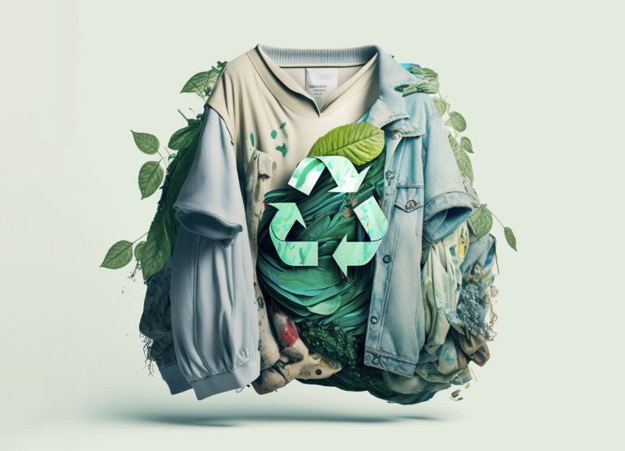
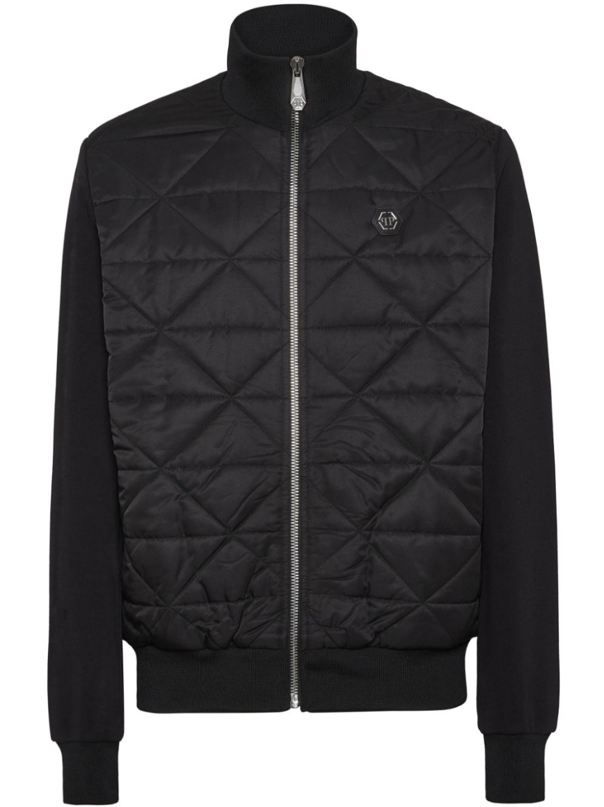
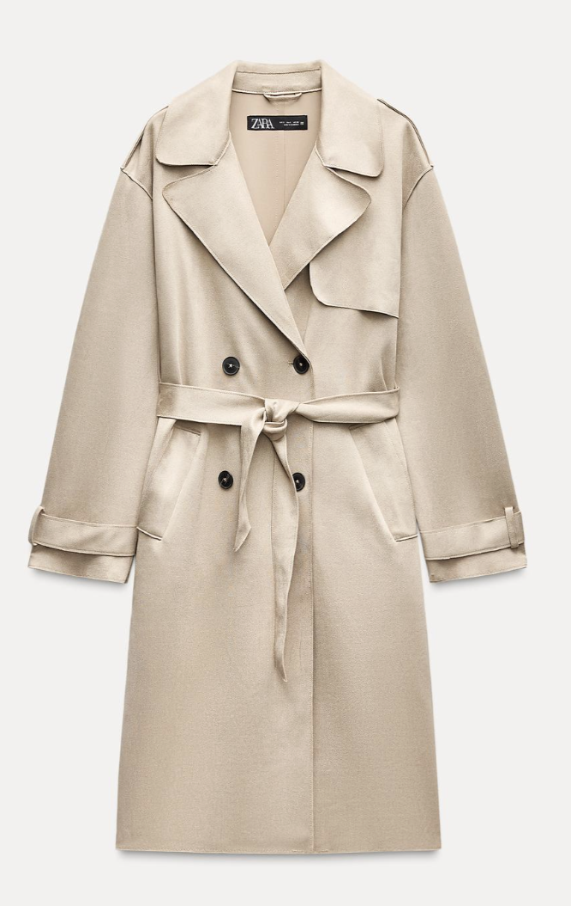
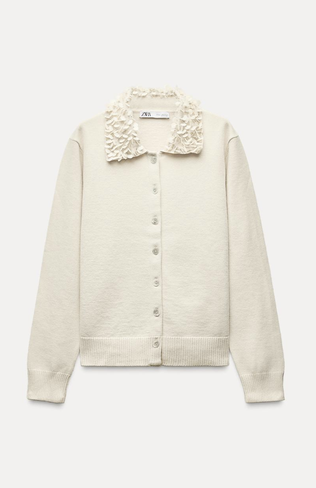

Giy. Takip Et. Sürdür.
Gardırobunuzu sürdürülebilir bir hale dönüştürün.
Özellikler
- Gardırobunuzu kolaylıkla ve şık bir şekilde takip edin.
- Giyinme sayısı ve sürdürülebilirlik istatistiklerini gerçek zamanlı görün.
- Pazar yerimizde ikinci el eşyalar alıp satın.
İkinci El Pazar Yeri
İkinci el kıyafet ve aksesuarları satın alın ya da satın.
Profilim
Gardırobunuzdaki bazı eşyalar:

Ad: Kışlık Mont
Marka: Philipp Plein
Giyilme Sayısı: 15
Son Giyilme: 2 hafta önce

Ad: Kaban
Marka: Zara
Giyilme Sayısı: 7
Son Giyilme: 3 gün önce

Ad: Hırka
Marka: H&M
Giyilme Sayısı: 20
Son Giyilme: Dün